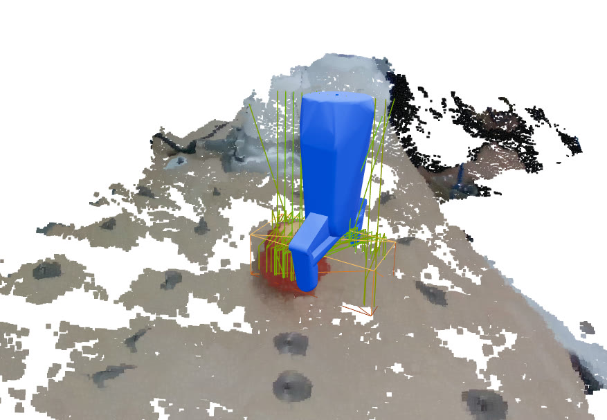
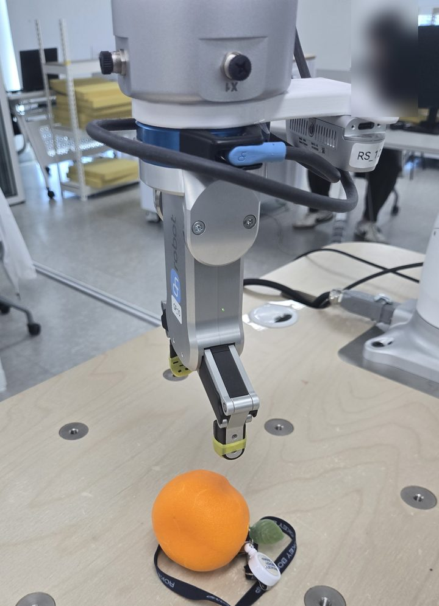
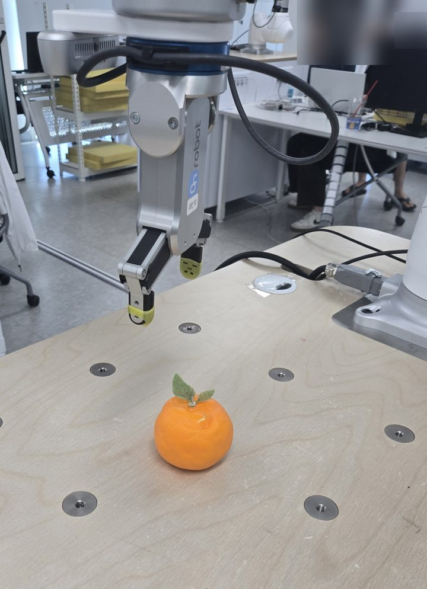
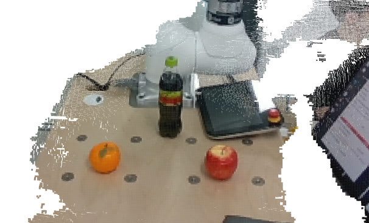
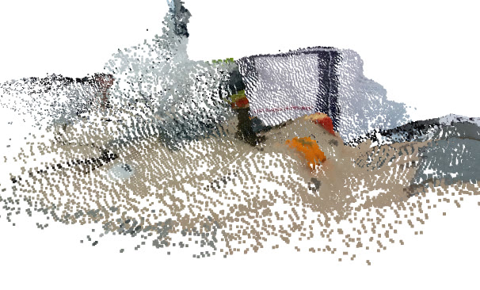
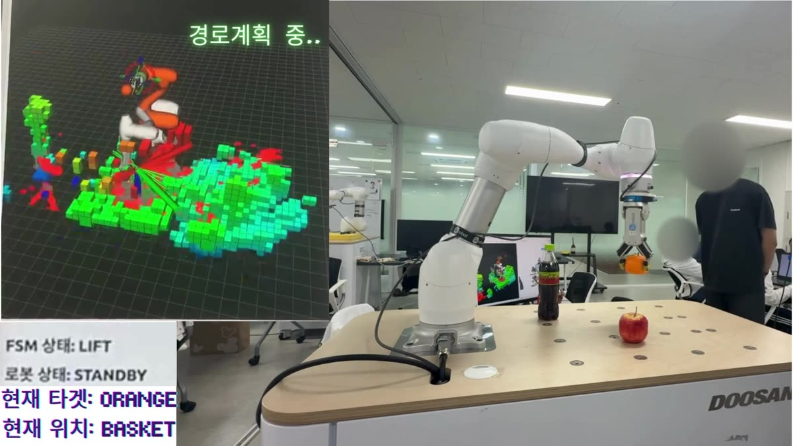
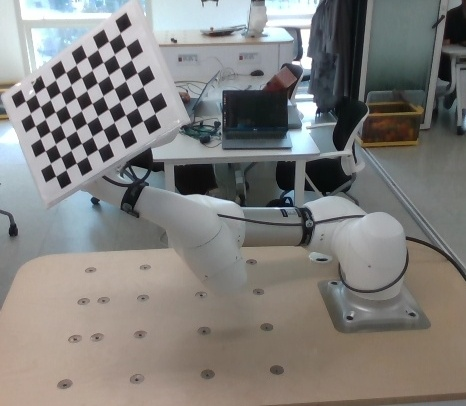
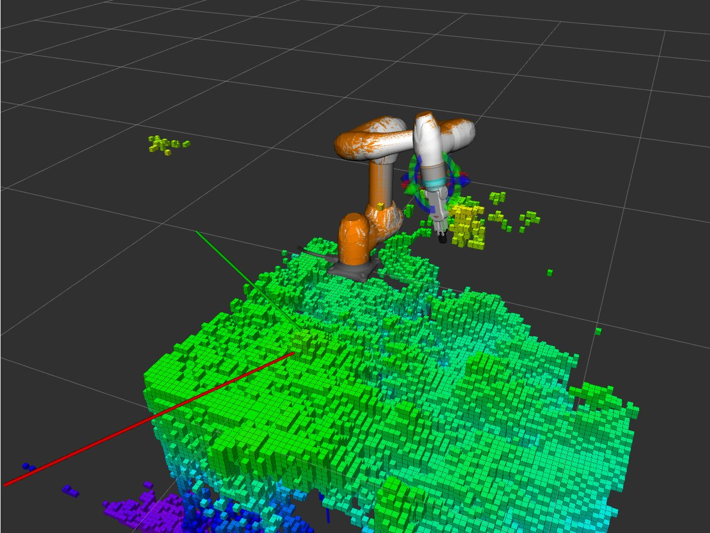
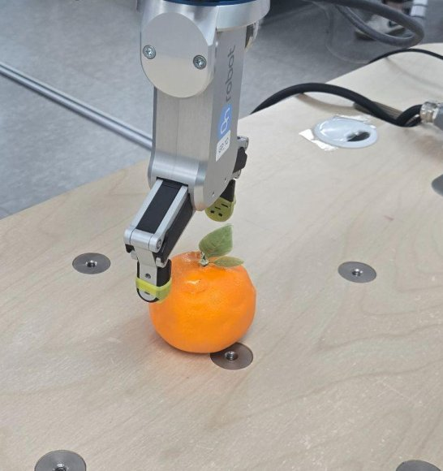
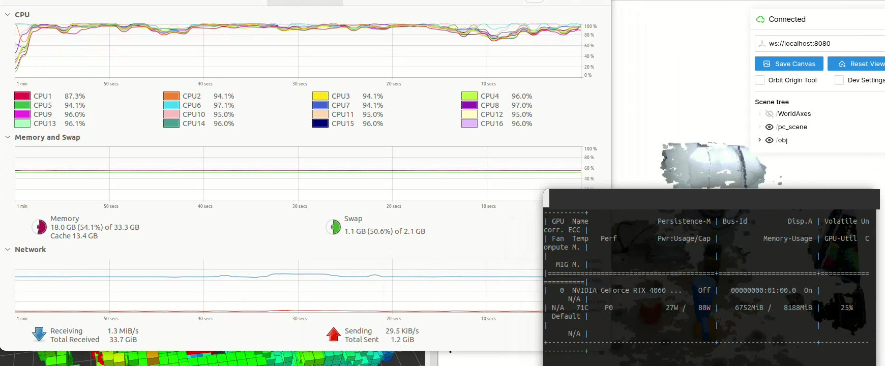

Last modified
한눈에 보기
1분 시연 영상
- 판단(VLA)·작업 제어(FSM)·인식을 실제 카메라 장면에서 이어 지시한 물체를 집어 목적지에 놓고 홈 위치로 돌아오는 과정(pick-and-place)을 13일차에 확인했고, 그와 다른 날인 5일차쯤에는 구동 중 사람이 작업영역에 손을 넣으면 멈추고 새 경로로 다시 계획하는 동작을 팀원들과 실기로 확인했습니다. 노드 성능을 조절해 GPU 경로계획(cuMotion)과 GPU 모듈을 모두 함께 띄울 메모리 여유도 맞췄습니다.
- 마트 계산대에서, "사과 바구니에 담아줘" 같은 자연어 지시를 LLM(대규모 언어 모델)이 해석하고 협동로봇이 물체의 위치와 형상을 인식해 장애물을 피해 집어 옮기는 것이 목표였습니다.
- 5인 팀에서 저는 로봇 구동 파트의 작업 제어(FSM)와 인식·파지 연결, 안전 노드 통합(공동작업)을 맡았고, GPU 한 대의 메모리 조정과 실물 그리퍼 실측 보정을 했습니다.
- 부트캠프의 마지막 프로젝트로, 앞선 ROS 2 프로젝트 3개에서 쌓은 협업 경험을 바탕으로 판단·인식·모션·안전을 한 시스템으로 묶었습니다.
- VLA(보고·말을 알아듣고·움직이는 로봇)는 팀이 판단 계층 코드와 발표 자료에 쓴 이름으로, 이 페이지에서는 카메라 인식과 자연어 지시로 집을 물체와 놓을 곳을 정하는 판단 계층을 가리킵니다. 실제 이동은 작업 제어(FSM)가 맡습니다.
무엇을 만들었나
사람이 말로 지시하면 카메라로 물체를 찾아 집을 자세를 고르고, 로봇 팔이 정해진 순서대로 집어 옮기는 것을 목표로 만든 협동로봇 시스템입니다. 지시를 해석하는 판단 계층과 로봇을 움직이고 멈추는 작업 제어 계층으로 나뉩니다. 팀은 음성이나 글로 받은 지시를 "어떤 물체를 어디로"로 정리하는 판단 계층과 조작 화면을 만들었습니다.
물체를 찾아 집을 자세 고르기
YOLO-seg(물체 영역을 픽셀 단위로 나누는 인식 모델)로 카메라 깊이 영상에서 물체 영역만 잘라 3차원 점군 데이터를 만들고, 이 점군에 GraspGenX(물체를 집을 수 있는 자세 후보를 만드는 Nvidia의 파지 파운데이션 모델)를 적용해 파지 자세를 계산한 뒤 가장 좋은 자세를 고릅니다.



형태가 다른 여러 물체(콜라병, 바나나 등)로 넓혀 보려 했지만, 물체의 3차원 점군 데이터가 바닥과 뭉개져 형상을 구분하기 어려운 물체는 집지 못했습니다. 카메라 해상도를 파지 모델이 요구한 1280×720으로 올려 점군을 촘촘하게 만들면 나아질 수 있었지만, 깊이 영상 해상도를 올리면 프레임이 끊겼고(USB 대역폭 초과로 추정) 장애물 지도 갱신의 CPU 부하도 크게 늘어 노트북 성능상 낮은 해상도를 유지해야 했습니다. 당시 GPU 메모리는 이미 8,188MiB 중 6,752MiB를 사용 중이었고 CPU 점유율도 대부분 80% 이상이었습니다.


파지 모델 도입 건의와 인식·모델 연결, 실물 그리퍼 보정, GPU 메모리 조정 등 제가 맡은 진행 과정은 아래 사례에서 다룹니다.
단계별로 움직이고 멈추는 작업 제어(FSM)

저는 로봇 구동 파트에서 작업을 인식 → 계획 → 집기 → 옮겨 놓기 단계로 나눠 순서를 정하는 상태머신(FSM)을 맡았습니다.
정지와 그리퍼 판단은 팀이 정한 안전 규칙을 따릅니다. 예를 들어 "멈춰"는 언어 모델을 거치지 않고 바로 일시정지로 이어지고, 물체를 든 채 멈추면 그리퍼를 자동으로 열지 않습니다.
진행 과정
과제는 "AI(Computer Vision) 기반 협동 로봇 작업 어시스턴트 구현"이었습니다. 팀은 로봇이 이동할 좌표를 일일이 미리 지정(교시)해야 했던 이전 협동로봇 프로젝트의 경험에서 출발해 구현할 기능(LLM 지시 해석·GPU 경로계획)을 먼저 고른 뒤, 이를 엮을 시나리오로 사람과 협업하는 마트 계산대를 정했습니다.
처음에는 컨베이어 벨트로 계산대를 모사하려 했으나 구동 테스트에서 파지 모델과 맞지 않았고 벨트 폭이 좁았으며 판단 계층 튜닝도 어려워, 팀은 6~7일차쯤 컨베이어를 빼고 고정 작업대로 범위를 좁혔습니다.
파지 모델 도입 제안
저는 미리 정해 둔 집기 자세 대신 카메라 영상으로 집을 자세 후보를 만드는 모델을 쓰자고 팀에 건의하고 인식 결과를 그 모델에 잇는 연결을 맡아, 실제 카메라 장면에서 지정한 물체가 파지 후보까지 이어지는 것을 확인했습니다.
교시 불편과 GraspGenX 시연
이전 협동로봇 프로젝트에서 카메라 없이 좌표를 일일이 교시해야 했던 불편이 있었습니다. 그리퍼가 물체를 집을 자리를 스스로 찾는 GraspGenX의 시연이 눈에 들어와 시연 영상과 문서로 어떤 기술이고 어디에 쓸 수 있는지 찾아봤고, 직접 교시하던 수고를 대신할 수 있겠다고 판단해 팀에 도입을 건의했습니다.
CAD 모델 대신 카메라 영상
팀은 물체의 3차원 캐드(CAD) 모델이 미리 필요한 다른 방식 대신, 카메라 영상으로 바로 파지 후보를 만드는 GraspGenX를 시작점으로 삼았습니다.
후보 거르기와 후보 수 64개
저는 카메라가 찾은 물체 영역을 모델에 넘기고, 나온 후보를 점수·도달 범위·접근 방향으로 걸러 하나를 고르는 연결을 맡았습니다. 노트북 GPU 한 대(8GB)를 여러 모듈과 함께 써야 했기에 파지 후보 수를 기본 200개에서 64개로 줄여 시작했습니다.
13일차 실제 카메라 장면
이후 13일차에 실제 카메라로 찍은 6~9개 물체 장면에서 VLA가 지정한 물체가 GraspGenX 파지 후보까지 이어지는 것을 확인했습니다.
관심이 가는 기술을 만나면 지금 작업의 불편(교시 부담)을 덜어 줄 쓸 자리부터 확인하고 제안하는 방식으로 일했습니다.
체커보드 평평함 보정과 좌표 캘리브레이션
저는 좌표 맞춤에 쓰는 격자무늬 판이 평평하게 고정되도록 판의 받침과 데이터 수집 방식을 바꿔, 물체의 실제 위치와 시뮬레이션 화면 속 위치를 비슷하게 맞췄습니다.
체커보드로 모은 데이터
작업대 옆에 고정한 카메라가 본 위치를 로봇 기준 좌표로 바꾸려고, 로봇 팔에 체커보드(좌표 계산용 격자무늬 판)를 붙이고 움직이며 캘리브레이션(카메라와 로봇의 좌표계를 맞추는 작업) 데이터를 모았습니다.
오차 원인 후보 세 가지
그러나 물체의 실제 위치와 시뮬레이션 화면 속 위치 사이에 오차가 크게 나타났습니다. 저는 캘리브레이션 로직을 검토해 원인 후보를 보드의 평평함과 조명, 데이터의 각도·위치 다양성, 계산 평가 로직의 세 가지로 나누었고, 그중 보드의 평평함이 중요하다고 판단했습니다.

파일철에 붙인 체커보드
우드락으로 받친 보드는 정확도가 떨어져, 플라스틱 파일철에 체커보드를 붙여 지지하고 그리퍼가 직육면체 블록을 정확히 문 채 여러 각도로 회전하는 동안 보드가 평평하게 고정되도록 수집 방식을 바꿨습니다. 카메라 마운트 위치를 테이프와 사진으로 남겨 고정하는 작업은 팀원들과 함께 했고(공동작업), 데이터 수집 방식과 재수집 여부 판단은 제가 맡았습니다.
3D 위치 오차 개선과 회전 오차의 수치상 불합격 판정
이후 물체 위치와 시뮬레이션 위치가 비슷해져 그 위에서 파지 후보 생성과 우회 경로 생성·이동을 이어 갔습니다. 다만 그 뒤 다시 모은 캘리브레이션 데이터도 회전 오차가 평가 스크립트의 정량 기준을 넘어 불합격으로 판정됐습니다. 이는 단순 수치 계산에 따른 판정이라 실제 작업에서는 평가 비중을 낮게 두기로 판단했고, 위치가 비슷해진 상태에서 다음 단계 작업을 계속 진행했습니다.
위치 오차의 원인 후보를 나눠 놓고 하나씩 진행하면서, 계산 결과만 보지 않고 체커보드처럼 데이터를 만드는 실물 도구의 상태부터 점검하고 고정해야 한다는 점을 배웠습니다.
카메라·파지 모델 실기 검증 — 위치 오차 실측과 원인 분리
저는 실기에서 잰 물체 위치 오차가 좌표계 불일치가 아니라 카메라가 물체의 앞쪽 표면만 재서 생긴 편향임을 수식으로 밝혀, 캘리브레이션 값을 임의로 수정하지 않고 그대로 두었습니다.
시선 방향으로 약 1.7cm 앞
작업대 옆 카메라와 GraspGenX를 실기에서 검증하던 7일차에, 물체 위치가 카메라 시선 방향으로 약 1.7cm 앞에 찍히는 것을 실측했습니다. 캘리브레이션 값을 고쳐 오차를 없애고 싶은 상황이었지만, 깊이 카메라로 계산한 위치는 물체 전체의 중심이 아니라 카메라에 보이는 앞쪽 표면의 중심이라는 점을 수식으로 유도했습니다.
반지름의 3분의 2만큼
구 모양 물체는 중심보다 반지름의 3분의 2만큼 카메라 쪽으로 찍히므로(반지름 2.5cm 사과면 약 1.7cm로 실측과 일치), 이 오차는 좌표계 불일치가 아니라 보이는 표면만 재서 생긴 편향이었습니다.
파지 기준점과 TCP 혼동
같은 시기에 파지 모델 자세의 기준점과 로봇 공구 끝 기준점(TCP)을 혼동해, 접근 방향이 기울면 기준점이 옆으로 비켜나는 차이(30° 기울면 약 9cm 옆)를 "좌표 오차"로 잘못 보았던 것도 따로 분리했습니다.

코드와 문서에 남긴 경고
캘리브레이션 값을 고치는 대신, 물체 앞쪽 표면 편향을 캘리브레이션으로 보정하지 말라는 경고를 코드와 문서에 남겨 없는 오차를 보정해 새 오차를 만들지 않도록 했습니다. 이 판단이 파지 성공률에 준 효과는 기록이 없습니다.
오차가 보이면 수치부터 맞추기보다, 데이터가 어떻게 측정되고 계산되는지에서 원인을 먼저 나눠 봐야 한다는 점을 배웠습니다.
실물 그리퍼 실측 보정
저는 실물 그리퍼를 직접 재서 모델과 다른 치수를 찾아내고, 파지 모델은 그대로 둔 채 그 차이를 그리퍼 코드 쪽 보정으로 맞췄습니다.
시뮬레이션과 실기의 규격 차이

그리퍼 모델은 시뮬레이션(RViz2)에서는 정상이었지만, 실기에서는 모델과 실물의 규격 차이가 드러났고 파지 자세를 손목 끝 기준으로 잘못 해석해 그리퍼가 90° 눕기도 했습니다.
모델 파일 회전값 비교
GraspGenX 모델은 그대로 두고 우리 쪽 로봇 모델 파일(URDF)과 그리퍼 코드에서 차이를 흡수하기로 했고, 저는 두 모델 파일의 회전값을 행렬로 펼쳐 비교해 파지 기준점을 그리퍼 몸체로 확정했습니다.
22mm 브라켓과 38mm 손끝 길이
이어 펜던트에서 공구 끝 기준점을 설정하고 그리퍼를 수직으로 세워 천천히 내리며 접촉 지점까지 직접 측정해, 로봇 팔과 그리퍼 사이에 22mm 브라켓이 끼어 있고 다물었을 때 손끝 길이가 모델보다 38mm 길다는 점을 확인했습니다.
벌림 폭별 손끝 길이 보정표
힌지 구조라 벌릴수록 손끝까지의 길이가 짧아지는 점을 고려해 벌림 폭별 손끝 길이 보정표를 만들어 그리퍼 코드에 반영했고, 닫힘 폭에 여유를 더해 물체에 닿기 전에 멈추던 부호 오류도 바로잡았습니다. 드라이버 폭 단위(1/10mm)와 사과를 으깨던 기본 파지력(40N)은 규약으로 정리했습니다.
벌림 폭별 보정은 충돌 검사용 그리퍼 모양과 RViz 표시에 반영했고, 로봇이 도달할 목표 자세(IK 목표) 자체는 바꾸지 않았습니다. 파지 성공률에 준 효과는 미검증입니다.
시뮬레이션에서 정상으로 검증된 모델이라도 실물에서는 그리퍼의 실제 치수와 기준을 다시 재서 맞춰야 한다는 점을 익혔습니다.
실기 동작에 맞춘 접근 거리와 파지 조건 조정
저는 가상 환경 검증에 이어 실기 구동을 반복하며 더 잘 집으려고 그리퍼의 접근 거리와 파지 후보 선별 조건, 여유값을 실기 동작에 맞춰 조정해 바닥을 긁지 않고 적당한 거리에서 물체 중심을 파지하도록 했습니다.
가상 환경 검증에서 이어진 실기 반복
가상 환경에서 검증한 동작을 실기로 옮기자, 물체를 더 잘 집으려면 실기 동작에 맞춰 더 다듬어야 했습니다. 저는 실기 구동을 거듭 관찰하며 그리퍼가 물체에 다가가는 거리와 파지 후보를 고르는 조건, 파지 여유값을 실기 동작에 맞춰 조정하기로 했습니다.
파지 후보를 고르는 세 단계 조건
파지 모델이 만든 64개 후보 중 실제 작업 환경에 맞는 자세가 남도록 선별 조건을 실기에 맞춰 조정했습니다. 후보는 점수뿐 아니라 로봇 팔의 도달 반경과 위에서 내려다보며 집는 접근 방향으로 차례로 걸렀습니다. 옆이나 비스듬히 들어가 테이블과 부딪힐 수 있는 후보는 빼고 남은 후보 중 점수가 가장 높은 자세를 고르도록 했습니다.
접근 거리와 여유값 조정
집기 전 물러서는 접근 거리를 0.10m에서 0.15m로 늘리고 앞 사례에서 바로잡은 닫힘 폭 여유값 부호와 함께 동작 설정값을 실기에 맞춰 다듬었습니다. 후보 조건·접근 거리·여유값을 이렇게 함께 맞춰 가며 그리퍼가 바닥을 긁으며 들어가지 않고 적당한 거리에서 3차원 형상 기반으로 물체 중심을 파지하는 동작을 확인했습니다(파지 성공률 같은 수치는 재지 않았습니다).
가상 환경에서 모델과 규격을 검증했더라도 실제 로봇이 움직이는 환경에 맞춰 접근과 파지 조건을 반복해 조율해야 온전한 동작으로 이어진다는 점을 배웠습니다.
충돌 검사용 구 모델 제작과 계획 실패 원인 규명
충돌 검사용 구 모델로 경로 계획이 실패하자, 저는 실제 외형을 쓰는 다른 경로계획 도구와 결과를 대조해 구가 마디보다 커서 생긴 실패임을 가려내고, 겹친 마디 쌍을 충돌 무시 목록에 넣어 로봇을 움직이지 않는 계획 시험을 통과시켰습니다.
구 모델의 자기충돌 판정
기성 파일이 없어 새로 만든 GPU 경로계획(cuMotion)용 구 모델은 기본 자세에서도 자기충돌로 판정됐지만, 실제 외형을 그대로 쓰는 CPU 경로계획(OMPL)에서는 같은 자세가 10회 모두 통과해 저는 구가 실제 단면보다 크다고 판단했습니다.
충돌 무시 목록과 20회 시험
겹친 6개 마디 쌍을 충돌 무시 목록에 넣어 로봇을 움직이지 않는 계획 시험을 20회 모두 통과시켰지만, 그중 2개 쌍은 충돌 보호를 포기한 것이고 구 크기를 다시 맞추지는 못했습니다.
파지 재시도와 안전정지 복구 시 홈 위치를 경유하도록 전이 규칙 설계
저는 물체를 다시 집거나 안전정지 후 복구할 때 로봇 팔이 물체 높이에 남은 채 다시 촬영해 그리퍼 자신을 물체로 잘못 인식하는 일을 막기 위해, 허용된 단계 이동을 관리하는 전이표에서 반드시 홈 위치를 거치도록 규칙을 정했습니다.
전이표 반영과 시험 코드 검사, 실기 측정 기록 없음
재시도나 안전정지 뒤 홈 위치를 거치도록 하는 단계 이동은 FSM 전이표에 반영했고, 시험 코드에는 해당 전이가 허용되는지 확인하는 검사를 두었습니다. 실제 로봇 구동에서 오인식을 얼마나 막았는지 측정한 기록은 없습니다.
작업 환경 3D 장애물 지도(CPU·GPU) 반응 비교
저는 CPU로 계산하는 octomap과 GPU로 계산하는 nvblox, 두 장애물 지도가 같은 물체에 어떻게 반응하는지 작업 영역에 노트북 케이스를 넣었다 빼며 나란히 비교했습니다.
nvblox 쪽 반응
nvblox 쪽이 먼저 나타나고 케이스를 뺀 뒤에도 더 빨리 사라졌습니다.
연산 방식에 따른 반응 차이
연산 방식에 따른 반응 차이를 실제 장면에서 확인한 예이며, 반응 시간을 수치로 재지는 않았습니다.
단일 GPU 메모리 조정
저는 한정된 노트북 GPU 메모리를 여러 모듈이 나눠 쓰도록 사전에 성능 부하를 조율하는 한편, 실행 환경 구성 문제로 물체 인식 노드가 중복 실행되던 현상을 바로잡아 노드를 1개로 정리했습니다.
노트북 GPU 하나(8GB)


3차원 장애물 지도(nvblox)·GPU 경로계획(cuMotion)·물체 영역 분할(YOLO-seg)·파지 후보 생성(GraspGenX)이 노트북 GPU 하나(8GB)를 나눠 써야 했습니다.
지연 병목과 파지 후보 수
처리 지연 기준으로는 파지 후보 생성이 가장 느렸고 물체 인식 추론은 카메라 영상 공급보다 빨랐기 때문에, 물체 인식 모델을 더 빠른 실행 형식으로 바꾸는 최적화는 하지 않기로 사전에 판단했습니다(실측해 보니 YOLO는 상주 120MiB·추론 6.7ms로 지연 병목이 아니었고, 지연 기준 실제 병목은 GraspGenX였습니다). 대신 파지 후보 생성 쪽 부하를 성능 테스트를 거치며 천천히 줄였고, 그중 하나로 파지 후보 수를 기본 200개에서 64개로 줄였습니다.
컨테이너 안에 쌓인 인식 노드
실행 중 GPU 메모리가 부족해진 주된 원인은 물체 인식 쪽이었지만, 성능 조율 문제가 아니라 실행 환경 구성 문제였습니다. 다시 실행할 때마다 컨테이너(필요한 라이브러리를 묶어 따로 띄우는 실행 환경) 안에 물체 인식 노드가 종료되지 않고 최대 10개까지 쌓여 GPU 메모리 2.6GB를 차지하고 보조 메모리를 소진했으며, 물체 영역 마스크도 뒤섞였습니다.
저는 실행 래퍼와 중복 실행 방지 락(lock)을 만들어 노드를 1개로 줄였고 이를 실사용에서 확인했습니다(래퍼 상태에서 Ctrl-C 종료 전달은 미검증). 파지 실패를 재현하던 중에는 이미 떠 있던 파지 워커와 중복 로드되어 메모리가 부족해지던 원인도 확인했습니다.
컨테이너 안팎의 노드 실행
팀은 GPU를 쓰는 물체 영역 분할과 파지 후보 생성은 컨테이너 안에서, 나머지 노드는 컨테이너 밖(호스트)에서 실행해 ROS 2 토픽으로 결과를 주고받았고, 탐지 대상·물체 치수 설정 파일 하나를 컨테이너 안팎이 같이 읽게 했습니다.
개발 노트에는 컨테이너 경계를 지나는 인식 토픽의 수신 주기를 양쪽에서 같은 시간에 재어 프레임이 빠지지 않았다는 기록이 있습니다. 이러한 성능 조절과 실행 환경 정리를 거쳐 최종적으로 모든 모듈을 함께 구동할 수 있었습니다(모든 모듈 동시 구동 상태에 대한 정량 측정 기록은 남기지 않았습니다).
여러 프로그램이 GPU 메모리 하나를 나눠 쓰는 부하 조율과 프로그램을 띄우고 끄는 실행·종료 관리는 성격이 다른 문제임을 체감했고, 단일 기능의 속도 조절 못지않게 전체 소프트웨어의 실행 환경을 안정적으로 통제해야 한다는 교훈을 얻었습니다.
로봇 제어 일원화와 시스템 통합
팀은 판단 계층과 작업 제어(FSM)가 모두 로봇 팔을 움직일 수 있던 구조를 작업 제어만 팔을 움직이도록 정리했고, 저는 판단 계층·인식과 작업 제어를 잇는 연결을 함께 만들어(공동작업) 지시한 물체를 집어 옮기는 전체 과정까지 실물로 이어지는 것을 확인했습니다.
팀에서 일한 방식
팀은 전공을 기준으로 판단·인식을 맡는 VLM(영상과 언어를 함께 다루는 모델) 파트 3명과 로봇 구동을 맡는 M0609 파트 2명으로 나눴고, 저는 M0609 파트에서 pick 상태머신(FSM)과 인식·파지 연결, 안전 노드 통합을 맡았습니다(공동작업).
팀은 실질 14일 동안 주말에도 매일 의견을 나눴고, 자료 공유는 Slack, 일일 변경 기록은 Notion, 코드는 GitHub, 발표 자료는 Google Drive로 용도를 나눠 썼습니다.
본인 담당:
- VLA 작업 지시 전달 및 디버깅·모니터링을 위한 FSM 상태 구분과 감지 실패 예외 처리 연동(공동작업)
- 구동 중 정지 후 재계획 연결(공동작업) — 5일차쯤 팀원들과 함께, OMPL 경로로 움직이는 중 사람이 작업영역에 손을 넣으면 멈추고 새 경로로 다시 계획하는 동작을 실기로 확인했고 출발 전 장애물 우회도 실기로 확인했습니다. GPU 경로계획(cuMotion)은 출발 전 우회만 지원하고 실행 중 실시간 회피는 지원하지 않아, 팀은 3Hz 재계획 루프를 함께 시험하고 MPC(앞으로의 움직임을 예측해 제어값을 정하는 방식)를 ROS로 감싸는 방법도 검토했습니다. 다만 시간이 촉박해 cuMotion 경로의 실행 중 회피는 설계·실험 단계에서 끝났고 실기에는 적용하지 못했습니다.
- 실기 설정값의 정본을 설정 파일(yaml)에 두고 실행 옵션(launch 인자)과 분리
배운 점
처음 다루는 도구는 다음과 같이 익혔습니다.
- MoveIt(로봇 팔의 이동 경로를 계획하는 프레임워크)·GraspGenX 등은 공식 문서와 데모 예제로 익혔습니다.
- GraspGenX와 GPU 경로계획·장애물 지도 라이브러리는 실제로 쓰는 버전의 소스 코드까지 읽었습니다.
- 장비 기본 사용은 부트캠프 공통 교육으로 익혔습니다.
새로운 오픈소스 모델이나 시뮬레이션의 수치를 그대로 믿기보다, 현장의 실물 그리퍼 치수를 재서 우리 쪽 코드에서 차이를 흡수하는 기준을 세웠습니다.
기술 상세
진행 흐름·막힌 지점·결과·계층 구조·시스템 구성 펼쳐 보기
진행 흐름
- 1~2일차 — 구현할 기능을 고르고, 전공에 맞춰 판단·인식(VLM) 파트와 로봇 구동(M0609) 파트로 역할을 나눈 뒤 마트 계산대 시나리오를 확정했습니다.
- 3~4일차 — 개발 환경을 구축하고 로봇 구동·MoveIt 연동과 음성 인식 초기 이식을 진행했습니다.
- 4~6일차 — 미리 정한 파지 자세 대신 GraspGenX로 집을 자세를 만드는 방식으로 바꿨고(본인 건의), GPU 없는 노트북에서 3차원 충돌회피 기준선을 확인했습니다.
- 6~10일차 — 팀 공유 GPU 노트북에서 장애물 지도·GPU 경로계획을 시험하고, pick FSM과 GraspGenX 연결을 파트별로 나눠 개발했습니다. 중반에 컨베이어 벨트로 계산대를 모사하려던 계획을 빼 고정 작업대로 범위를 좁혔고, 10일차에 VLA 통합 범위를 확정했습니다.
- 11~13일차 — 판단 계층의 명령을 FSM이 받는 요청으로 바꿔 전달하는 프로그램(노드)과 인식↔FSM 연결을 만들고, 놓기·통합 테스트를 거쳐 13일차에 VLA·FSM·인식 세 패키지가 실카메라 장면에서 이어지는 것을 확인했습니다.
- 14일차 — 발표.
막힌 지점과 판단
장애물 인식이 멈춰도 경로 계획이 "장애물이 없는 세상" 기준으로 성공해 버리는 문제를, 저는 로봇을 움직이지 않고 계획만 실행해 재현했습니다.
그다음 팀 모션 코드 위에 장애물 지도 서비스가 없으면 이동을 거부하는 게이트와 계획에 반영된 장애물 칸 수 기록을 제안·구현했습니다(공동작업). 이 코드는 최종 pick FSM 경로에 연결하지 않은 실험 코드입니다.
결과와 검증 한계
- 테스트(pytest — FSM·음성 79건, VLA 판단 246건 통과)는 제출 당시 README에 남은 기록이고 다시 실행하지 않았습니다. 로봇·카메라 없이 규칙과 JSON 처리 로직만 검사한 테스트로, 실기 성능 검증은 하지 않았습니다.
- 남은 과제: pick-to-place 성공률·반복 횟수 측정(둘 다 기록하지 않았습니다), RG2 보정이 파지 성공률에 준 효과 검증, 실행 중 장애물 회피(움직이는 동안 짧은 주기로 다시 계획하는 노드 구현).
계층 구조
팀 시스템은 판단(LLM)과 실행·안전(FSM)을 서로 다른 노드와 패키지로 나누고, 두 계층이 명령·결과·상태를 JSON 채널로만 주고받게 했습니다. 모션 취소·그리퍼 개폐·물체 보유 상태·충돌 씬 관리는 FSM 쪽에만 있어, 언어 모델의 응답이 늦거나 틀려도 정지와 그리퍼 판단은 FSM 규칙을 따릅니다.
정지는 언어 모델을 거치지 않습니다. 화면의 정지 버튼은 bridge(두 계층 사이 명령을 중계하는 노드)로 바로 가고, 음성 "멈춰"는 글자로 바뀐 뒤 언어 모델 없이 FSM을 일시정지(PAUSED) 상태로 바꿉니다.
사람작업 지시·정지 개입판단 계층 (LLM)
vla_gui음성 입력·상태 화면agent_nodeTier 1 규칙 / Tier 2 gpt-5-mini + 카메라 사진으로 지시 해석vla_pick_bridge_node판단 결과를 JSON 명령으로 변환정지(버튼·음성 "멈춰")는 vla_gui에서 agent_node를 거치지 않고 여기로 바로 옵니다/vla/pick_command (JSON)판단 계층에서 실행 계층으로 명령을 전달하는 채널실행·안전 계층 (FSM)
vla_command_nodeJSON을 FSM 서비스 호출로 변환task_manager (pick_fsm)상태 전환·실행 조율graspgenx_perception물체 분할·파지 후보 계산moveit_bridge → move_group (OMPL)경로 계획·실행M0609 + RG2협동로봇 팔과 그리퍼robot_safety_node별도 프로세스의 Doosan 안전 서비스무엇을 할 수 있나
아래는 구현된 처리 흐름입니다. 집어 옮겨 놓는 과정은 13일차에 실물로 확인했지만, 표의 지시마다 실물 확인 기록이 있는 것은 아닙니다.
| 지시 | 시스템이 하는 일 |
|---|---|
| "사과 바구니에 담아줘" | 물체를 인식하고 파지 자세를 계획한 뒤 집어서 바구니에 놓습니다(사람 승인 단계는 기본 꺼짐). |
| "이거 집어줘" (손가락으로 가리키며) | 카메라 사진에서 가리킨 물체를 골라 화면 좌표로 넘깁니다.¹ |
| "사과 집어줘" (목적지 없이) | 들어 올린 뒤 물체를 든 채 기다립니다. "테이블에 놔"로 놓을 곳을 정하거나 "그냥 거기 놔"로 그 자리에 놓으면 끝납니다. |
| "보이는 과일 다 담아줘" | 미션 관리 기능이 하나씩 순서대로 처리하고 도중에 지시를 바꿀 수 있습니다. |
| "멈춰" | 언어 모델을 거치지 않고 일시정지했다가 "계속해"로 이어 갑니다. |
| "컵은 앞으로 담지 마" | 규칙으로 기억해 이후 "다 담아줘"에서 컵을 뺍니다. |
¹ vla_command.launch.py로 띄울 때(pixel_policy 기본값 select) 동작합니다. 노드를 단독 실행하면 기본값이 warn이라 픽셀 좌표를 무시합니다.
시스템 구성
인식 — 작업대 옆에 고정한 RealSense D435i 카메라 1대(eye-to-hand, 로봇 팔이 아니라 바깥에 고정한 카메라)와 YOLO-seg(영상에서 물체 영역을 픽셀 단위로 나누는 모델)로 대상을 찾습니다. 카메라 좌표는 eye-to-hand 캘리브레이션 결과를 써서 로봇 기준 좌표로 바꿉니다.
graspgenx_perception은 GraspGenX 컨테이너 안의 GraspGen(물체 형상을 보고 집을 수 있는 자세 후보를 만드는 모델)에서 파지 후보 64개를 받아 점수·도달 반경·접근축 조건으로 걸러 하나를 고릅니다. 기본 설정에서는 그리퍼 폭을 상수로 쓰고 물체별 폭까지 받으려면 별도 서비스 경로를 씁니다.
참고 문서
팀 발표 자료(세부 기술): 발표 자료(PDF, 72쪽)